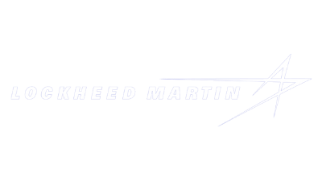
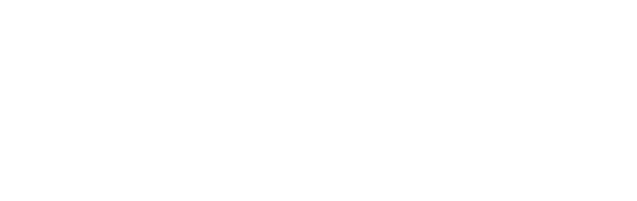
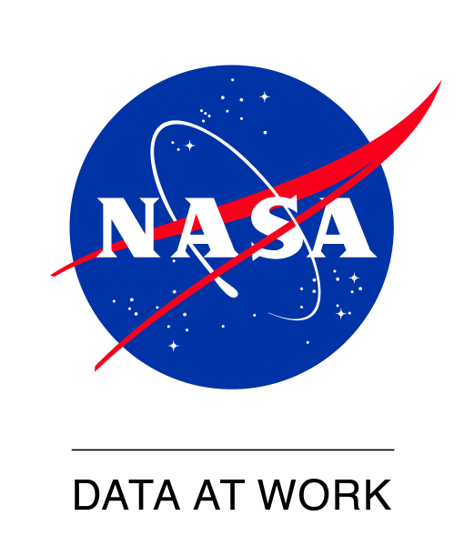
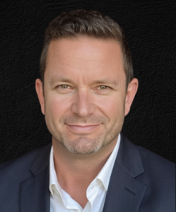
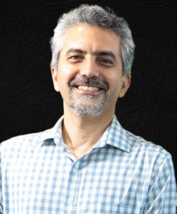

Radiation & Environmental Assurance
Radiation effects, reliability, extreme temperature, and environmental stress testing for parts headed beyond low Earth orbit.

University of Central Florida
CRESST, UCF's Center for Reliability Evaluation of Semiconductor and Space Technologies, develops agile assurance strategies for commercial-off-the-shelf (COTS) and hybrid architectures, connecting part selection, radiation and reliability testing, advanced packaging, and failure analysis into a single qualification pipeline. Through ARCTIC (Artemis-Ready Cryogenic Technologies for Instrumentation and Power Conversion), it also builds cold-capable power and instrument electronics for the lunar surface and deep space.
The Gap
Commercial space moves faster than traditional parts assurance can follow.
Commercial and government space programs increasingly fly COTS parts and hybrid architectures that mix COTS, automotive-grade, and space-qualified parts. Each part is chosen for performance, availability, and cost, and many fall outside the traditional parts classes, flight heritage, and lot-by-lot qualification that legacy assurance standards assume.
CRESST closes the gap with agile, environment-driven assurance strategies that build confidence in non-traditional parts for a specific use case and environment. It connects part selection, radiation and reliability testing, advanced packaging, and failure analysis into one qualification pipeline, built to replenish expertise and relieve test-infrastructure bottlenecks on a scale no other program can match.
Key Areas of Focus
Every part CRESST touches moves through the same set of assurance disciplines, from first electrical stress test to a data package a program can act on.
Radiation effects, reliability, extreme temperature, and environmental stress testing for parts headed beyond low Earth orbit.
High-voltage, biased-stress, power-electronics, and application-relevant electrical testing, plus cold-capable space power hardware through ARCTIC.
Package-level reliability, materials, thermal/mechanical performance, and advanced integration strategies.
Root-cause analysis, a failure-signature library, and closed-loop assurance improvement.
Part selection, screening, derating, alternate sourcing, and use-case-specific data packages.
Curriculum, certificate pathways, internships, mentorship, and continuous workforce replenishment.
Assurance Strategy
Who We Work With
CRESST's assurance workflows are shaped by the commercial space companies, primes, suppliers, and government laboratories that will use them.
Commercial-space radiation-effects and qualification perspective.

Prime-contractor perspective and workforce mentoring.

NSF-funded advanced-packaging and heterogeneous-integration partnership.

EEEE parts assurance and radiation-effects mentoring.
Extreme-environment assessment and advanced-packaging review.
Mission-relevant testing and Artemis systems engagement.
System-level reliability and extreme-environment assessment.
Why UCF
UCF's national rank as an aerospace & defense workforce supplier, by scale
UCF students — one of the nation's largest engineering pipelines
Years of space electrical and power leadership Dr. Iannello brings to CRESST
Peer-reviewed radiation-effects papers from Dr. Zhang's lab, cited 5,000+ times
Leadership
Principal Investigator · Assistant Professor, UCF
Leads CRESST's technical program in radiation effects and reliability of advanced microelectronic devices — silicon, compound semiconductors, and 2D materials — plus photonic and RF devices and MEMS/NEMS. Author of 200+ peer-reviewed papers cited more than 5,000 times; recipient of the 2022 IEEE NPSS Women in Engineering leadership travel award.

Director · Professor of Practice, Space Electrical, Former NASA Technical Fellow for Electrical/Power
Brings 35 years of technical leadership across NASA, industry, and academia in spacecraft and launch-vehicle electrical and power systems. Formerly NASA's longest-tenured Technical Fellow for Electrical/Power. Leads CRESST's workforce and curriculum strategy and its NASA engagement.

Department Chair, UCF Electrical & Computer Engineering
Provides university-wide institutional backing for CRESST. His own research spans MEMS/NEMS, resonant sensors, and micro-fabrication, with applications in telecommunications, bioengineering, and sensor technology.
Consortium Membership
Consortium members shape test methods, review data packages before release, and get standing access to the proton, laser, cryogenic, and failure-analysis capability as it comes online.